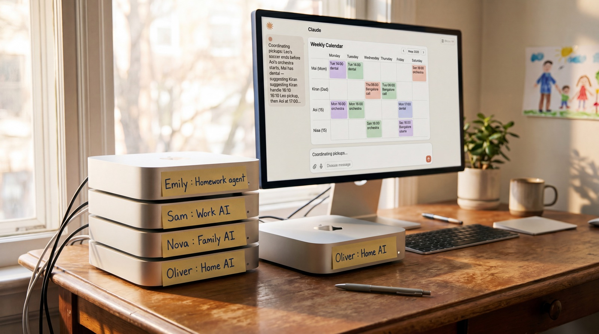
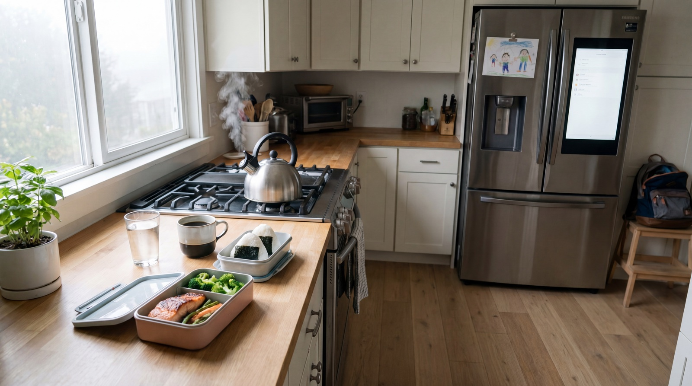
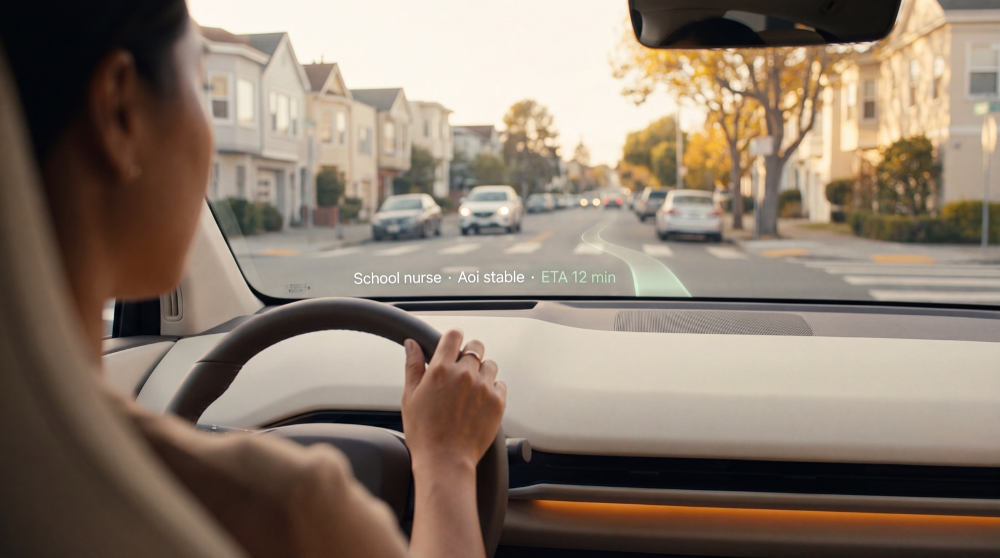
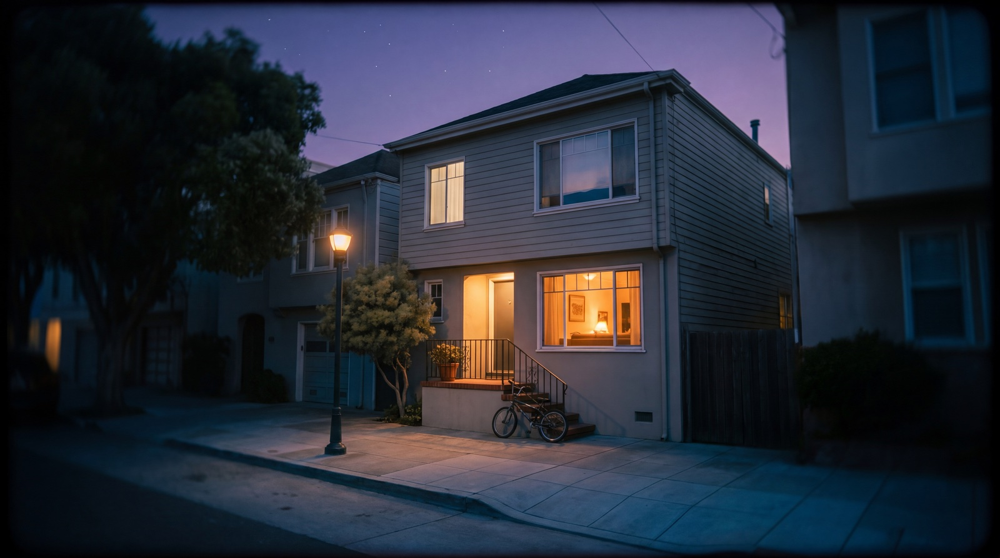

Two parents, three kids, five agents, one Context Brain.
Mai
mom · 38 · designer
Knows every ingredient in the fridge. Totoro nights with Aoi.
Kiran
dad · 41 · founder
6 AM Bangalore calls. Sunday curry from his mom's recipe.
Aoi
eldest · 15 · they/them
Wants to be asked, not assumed.
Sota
middle · 11 · soccer
Same lunch every Tuesday. Knows the exact bus to Tilden Park.
Leo
youngest · 9 · curious
Mild dairy intolerance. The family keeps a notebook of his unanswered "whys."
Names changed for privacy. Ages, family shape, allergies, and core interests are real — drawn from a Bay Area family during 2025–2026 portfolio research.
Executive Summary · 90 seconds
One Brain. Six surfaces. 76% of morning decisions, absorbed.
The problem
Five people, four single-purpose AIs, zero shared memory. Mai re-prompts every agent every morning.
The thesis
Context Grammar — a Brain (3 layers) + 8 Tokens + 2 Dials — becomes one shared grammar
every surface in the home speaks. Fridge, phone, iPad, CarPlay, Nest Hub all read the same Brain.
What's new
Silent Resolution · 6 of 7 cascading actions finish without notification.
3 Axes of Disclosure · translation, connection, archive — privacy as design, not a settings page.
Adaptive Autonomy · the same dial returns different answers based on stakes.
Care Architecture · the dial has a ceiling care doesn't cross.
Graduated Archive · memory unlocks on life events, not calendar dates.
The proof
Six surfaces, one Brain — Samsung Family Hub, iPhone, iPad, CarPlay, Google Nest Hub, Apple Watch.
Eight scenes, all driven by the same 8 Token state. Each scene maps to a canonical AX Pattern.
It generalizes
The same 8 Tokens describe an enterprise sales team — manager × AI agent × pipeline.
Same grammar. Different world. See Chapter 06.
Advanced families already try — with four lonely agents.
Today's workaround: four Mac minis on one desk, each running a single-purpose AI — Emily for homework, Sam for work, Nova for family, Oliver for the house. Four accounts, four Post-its.
None of them know about each other. Every morning starts from zero. A real answer — without a shared grammar.

Today, on thousands of family desks: four Mac minis, four handwritten Post-its, four isolated agents. One family trying to keep up.
Post-it · Mac mini
"Emily : Homework agent"
Separate account · can't see the calendar · forgets every time.
Post-it · Mac mini
"Sam : Work AI"
Has work files · blocked from personal · no crossover allowed.
Post-it · Mac mini
"Nova : Family AI"
Knows the family · doesn't know today · starts over every morning.
Post-it · Mac mini
"Oliver : Home AI"
Lives on the fridge · ignores the other three · answers alone.
From here on · the setup changes
Context Brain arrives. The Home Brain boots up.
One shared memory instead of four isolated ones. One grammar instead of four Post-its. The rest of this story is what becomes possible once the Brain is set up — and only once.
The setup
Five Brains. Three layers each.
What looks like one "Home Brain" is actually five distinct memory entities — each with the same three-layer anatomy. Identity (who), Learning (patterns), Now (this second). The same shape that runs an enterprise of 200 people. Different cast. Same architecture.
Below: the universal three-layer anatomy. Next: the five brains it lives in.
Layer 01 · in every brain
Identity
the reservation book · updates in months
Who the family is. Names, pronouns, allergies, languages — the bedrock that rarely changes. Written once. Referenced every decision.
Sota · egg OKLeo · mild dairyMai · Okinawan JPKiran · IN / NO
Layer 02 · in every brain
Learning
the waiter's memory · 11 months of observing
Patterns the Brain has built from watching. Monday pickup rhythms, Sota's soccer days, Leo's slow mornings, Kiran's 6 AM Bangalore calls. The layer that earns trust over time.
Mar 2019 · Sutro forest walk
Layer 03 · in every brain
LIVE
Now Layer
the waiter's observation · updates in seconds
Live values from the 8 Context Tokens. Mai's hands are full. Kiran's flight is delayed 40 min. The baby just woke up. 7:02 AM, foggy, 58°F.
hands: busySFO: delayedcognitive: med
The five brains of a home
Five entities. One anatomy.
A household is not an individual — it's a small organization. Five distinct memory entities, each owning the same three-layer anatomy. Aoi's pronoun update doesn't touch Sota's brain. Finance Agent can't read grades. The Trip Brain dies after Yosemite — and returns its learning home.
This is why "one Home Brain in three layers" was always a simplification. The reality is below.
Concept · Five Home Brains
Same five-tier shape as Project 04's Five Brain Diagram. Household at the foundation, Person×5 and Domain×5 as the middle, Coordinator above, Event Brains (with three inner layers) at the top — graduating into the archive.
Brain 01 · Foundation · ×1
Household Brain
P4 analog: Org Brain
The permanent ground every other brain stands on. Address. Family structure. Allergies that bind everyone. House rules. Family history. Updates in years, not days.
Brain 02 · Judgment DNA · ×5
Person Brain × 5
P4 analog: Brand Brain × N
One brain per family member — Mai, Kiran, Aoi, Sota, Leo. Each owns its own identity, taste, autonomy preferences. Cross-brain reads only via Disclosure Dial.
Per-agent specialist memory — what each agent has learned about its own domain over months. External data flows in continuously (statements, schedules, prescriptions).
Reads across all brains. Resolves conflicts. Three different lunches → one default pick happens here. Decides what to surface, what to suppress, what to escalate. Spawns time-bound Event Brains.
Brain 05 · Time-bound Execution · ×N
Event Brain × N
P4 analog: Project Brain
Born for a specific window. Learns intensely. Returns its learning to Household Brain. Then dies. The Trip Brain from Project 02 is one of these.
Yosemite trip · 4 daysAoi's school year · 9 moLeo's birthday · 1 weekMove · 6 weeks
Same five roles run a 200-person sales floor. Move the cast. The architecture stays.See Chapter 06 — same five brains, different world.
Brain · Coordinator · Agent
Brains remember. Agents act. The Coordinator decides.
Five brains store memory. They never act on their own. A single Coordinator reads across all of them, makes the call, and dispatches to specialised Agents — Voice, Shopping, Notify — that actually do things in the world.
Below: the 12-second cycle of one decision. "Sota's soccer shoes are tight" arrives → 5 brains read in parallel → Coordinator decides "silent buy" → Shopping Agent orders → write back to brains.
Concept · Brain ↔ Coordinator ↔ Agent
Three node types, three roles. Brain = passive memory (blue). Coordinator = active orchestrator (purple). Agent = action-taker (orange). The Coordinator is itself a special kind of agent — but its job is purely to read and dispatch, not to act on the world.
3 patterns at once · the same mechanism
① One Brain → many Agents — Person Brain (Sota) is read by Voice, Shopping, and Notify Agents
② One Agent → many Brains — the Coordinator alone reads all 5 brains to compose a single decision
③ Agents → write back — once the order is placed, Finance Brain records the spend, Person Brain updates the shoe size
For the full Brain vs Agent breakdown — including the restaurant metaphor, Q&A, and step-by-step trace — see the Brain & Agents explainer.
Layer 01 · Identity · present in every brain
Five people. One shared source of truth.
The Identity Layer holds what doesn't change Tuesday to Tuesday: names, pronouns, allergies, languages.
Written once. Every agent — Finance, Education, Calendar, Home, Travel — reads from the same card.
Layer 02 · Learning · present in every brain · 11 months shown
Eleven months becomes the shape of a Tuesday.
The Learning Layer watches for eleven months: Monday pickups, Sota's soccer, Leo's slow mornings, Kiran's 6 AM Bangalore calls, Aoi's orchestra Thursdays.
Small observations become the shape of a repeated Tuesday.
User UI · iPad
The Learning Layer — 11 months across 5 family members. Mai's kitchen iPad shows the map the Home Brain builds quietly. Every pattern here shapes the next decision.
Layer 03 · Now · present in every brain
Eight signals drive every decision. The family never sees them.
The Now Layer is where the 8 Context Tokens live — Cognitive Load, Physical State, Social Exposure, Priority Weight, Form Factor, Feasibility, Autonomy Dial, Disclosure Dial. They update by the second.
Mai would never look at a token gauge in the morning. As readers, we are seeing it so we can understand what the interface is hiding — on purpose.
BACKSTAGE · Now Layer
Mai does not see this. We are.
Backstage view
Each gauge is one of the 8 Context Tokens. The family never opens this — they just feel the decisions that come out of it.

Chapter 02
A Morning.
The house is already thinking before anyone says good morning.
Scene 01 / The kitchen · 7:02 AM
The fridge resolved three different lunches.
Samsung Family Hub already handles single-person meal planning in 2026 — 6 profiles, allergy filter, AI Vision, Bixby. The fridge knows Leo's dairy limit and Mai's sodium target. That's the starting line.
Monday collides: Kiran (dad) is on day 12 of a liver-marker reset. Leo (soccer after school) needs 2× calories. Sota has a class birthday cupcake. Three people, one fridge. The Rule Engine composes one plan that respects all three — not three suggestions Mai has to reconcile.
Mai says "middle one." The plan hands off to her phone, adds a Trader Joe's stop in Maps if inventory's low, and pings Kiran only if his approval is needed.
What Context Grammar adds (that Samsung 2026 does not ship)
• Multi-person collision resolution — one plan, three people's constraints
• Household-level Brain — learns what this family ate last month and varies accordingly
• Per-person Autonomy Dial — Mai auto-confirms, Kiran needs a tap, kids never see the choice
Brain telemetry · why did it pick #2
Every decision leaves a trace.
The family never sees this either — but designers and engineers do. Every UI command the Rule Engine emits comes with a full reasoning trace: which Tokens fired, which rules matched, which alternatives were considered.
This is what makes the Brain debuggable instead of mystical.
Backstage · Telemetry
A trace from one decision in Mai's morning. When the family asks "why did it pick that?", the trace is the answer — for designers, engineers, and (filtered) for Mai herself.
Seven agents had something to say. Six finished the work themselves. One remains — the one where Mai's judgment matters.
Calendar Agent saw Kiran's red-eye delayed 40 min, crossed it against Leo's 4 PM soccer, and shifted the pickup to 4:30 on its own. Weather, grocery arrivals, two bill reminders, a PTA note — all resolved. Mai sees only what needs her.
Focus mode suppresses notifications — the work still waits. Silent Resolution finishes the work. Nothing to catch up on.
Tokens as Contract
The same Token, readable by humans and by machines.
Every Token in the Now Layer has two faces. The narrative half — what designers and family members
read. And a machine-contract — what generative-UI compilers consume to emit the right surface.
Why it matters: this is what makes the Brain portable. The fridge, the iPhone, the CarPlay screen —
none of them ship with hand-coded layouts for "Mai is busy at 7:02." They render from the Token state.
Token · Cognitive Load · narrative side
"It's 7:02. Mai's calendar shows three back-to-back meetings starting 8:00. The baby just woke.
She's holding a coffee in one hand and a phone in the other. Cognitive Load = high."
→ fridge collapses 3 ideas into 1 default pick
→ phone hides everything except the one that needs her
→ CarPlay won't surface non-urgent during commute
No surface ships with a hand-coded "Mai is busy" template. Each surface is a renderer; the Token
state is the script. Same contract, six expressions.
Concept · Tokenized Design Patterns
What "tokenized design pattern" actually means at the architecture layer — not just a brand color
variable, but the entire context state as a typed contract that surfaces compile against.
AX Pattern composition · what Silent Resolution is made of
Patterns aren't a catalog. They compose.
"Silent Resolution" is four canonical patterns wired together. Each plays a role; together they
collapse seven would-be notifications into one. This is what a pattern library looks like as a system, not a Pinterest board.
Concept · Pattern composition
Same four patterns, recombined, become "Care Architecture" in Chapter 04, "Adaptive Autonomy" elsewhere. The pattern library is a vocabulary. The scenes are sentences.
Only Calendar crosses all five domains — it has to coordinate everyone. Health is read by every agent — allergies are too dangerous to forget. Everything else has hard walls.
Mai never sees the grid. She picks one profile per person — OPEN / OBSERVATIONAL / FAMILY-SAFE / LOCKED — and the matrix below is what that resolves into under the hood.
User UI · iPadDisclosure Settings — what Mai (admin) actually sees. High-level profiles per person (OPEN / OBSERVATIONAL / FAMILY-SAFE / LOCKED), one tap to customize. Aoi's row is expanded so you can see what's under a profile.
CONCEPT · The Matrix beneath
What one family profile resolves into, rule by rule.
Concept explainer
The full 5 × 5 grid that a single profile resolves into. No family has to read this to use it, but every Home Brain is built on it.
Disclosure resolution · how a profile becomes the grid
One tap on Aoi's profile. Every agent's access rewrites itself.
Mai never sees the matrix. She picks Family-Safe. The algorithm cascades: defaults → per-domain refinement → per-person override → a deny-by-default lock. The grid resolves.
Step 01 · Profile
FAMILY-SAFE
1 input. selected by admin (Mai)
Step 02 · Defaults
5 domain × 5 agent
25 cells. profile-driven defaults applied
Step 03 · Overrides
3 cells flipped
Aoi opts Education → FULL. teen self-override
Step 04 · Lock
Deny-by-default
Anything unspecified resolves to HIDDEN. never silently OPEN
Concept · Privacy as algorithm
"FAMILY-SAFE" isn't a label on a settings page — it's a function input. The matrix is the function output. This is why Mai never has to think about 25 cells, and why the family can trust that nothing slipped through.
Inside the Brain
Three peeks at the engineering substrate.
How the Brain ships, how surfaces talk to it, and how the contract grows without breaking what's already deployed.
A · Brain APIhow surfaces subscribe
Surfaces don't ask. They subscribe.
Each surface declares the slice of Brain state it cares about. The Brain pushes updates. No polling, no global state, no leaks.
Surface · Samsung Family Hub
// fridge subscribes to its sliceconst sub = brain.subscribe([
"identity.allergies",
"identity.dietary",
"learning.weekly_rhythm",
"ctx.cognitive_load",
"ctx.priority_weight"
]);
sub.on("update", (state) => {
fridge.render(state);
});
Per-surface permissions · enforced by Brain
fridge → identity.allergiesREAD
phone → ctx.*READ
phone → identity.pronounsREAD + WRITE
tv → identity.healthDENIED
all → ctx.cognitive_loadREAD (ambient)
Disclosure Dial isn't an opinion expressed in copy — it's enforced at the Brain API layer. A TV can't read health data even if its UI tries to.
C · Rule Enginehow Tokens turn into UI commands
Tokens in. UI commands out.
The Rule Engine reads the live Token state, evaluates priority rules, and emits typed UI commands. Surfaces never compute layout from raw Tokens — they compile from commands.
Same engine runs on Fridge, iPhone, iPad, CarPlay, Nest. Same Tokens in, same command shape out — only the renderer differs.
F · Schema versioninghow the contract evolves without breaking surfaces
8 Tokens today. 9 tomorrow. Your CarPlay still works.
Token schemas are versioned. Surfaces declare which version they speak. The Brain serves both, with deprecation windows long enough that no surface gets bricked.
A 2025 fridge running v1.0 still receives projections from a 2027 Brain. Boring infrastructure thinking — but the reason a Tokenized Design System ships, instead of dying as a 6-month internal demo.
Backstage · Architecture
Three of the engineering disciplines that make Context Grammar shippable instead of speculative — Brain API, Rule Engine, Schema Versioning.
One grocery item. Four Substitution Modes, running in parallel on the same list.
Mai
mom · 36
AUTO · EXACT
"Only this brand."
Same Oikos Plain, every Sunday. Never ask me again.
Kiran
dad · 38
FLEXIBLE
"Any Greek, high-protein."
Brand doesn't matter. You pick — I'll eat it.
Aoi
teen · 15
EXPLORING
"Dairy hurts now — help me find a new favorite."
Recently found dairy upsets them. Trying oat, almond, coconut — one at a time.
Leo
kid · 9
EXACT + SURPRISE
"His blueberry squeeze, plus one surprise."
Same pack every week + one Japanese-style yogurt to try.
One Brain, four grammars — running on the same grocery list.
User UI · iPhone
Mai's weekly grocery app — one list, but each yogurt row is handled differently. Hers is pre-ticked (AUTO). Kiran's shows a brand the AI chose (FLEXIBLE). Aoi's row is a dairy-free "try one" pick (EXPLORING). Leo's shows his usual plus a tagged "new this week" (EXACT + SURPRISE).
$2 yogurt auto-picks. $150 bottle waits for approval.
The Autonomy Dial isn't a single setting. Before the AI acts, it checks the item — how much it costs, whether you can undo it, how often you buy it — and decides how much it can do on its own.
Your $2.40 yogurt: already decided — buy it. Your kid's $48 shoes: one tap to approve. A $150 anniversary bottle: just suggest — you decide together.
Same person. Same preferences. The AI only steps forward as far as it can safely decide alone.
Backstage + User UI
Three moments from Mai's week. Left: the AI's reasoning — why it buys alone, asks, or only suggests. Right: what Mai actually sees on her iPhone. Mai never opens the left side; you are.
Nobody tried to share. The family connected anyway.
Three people, three apps, three different evenings. Aoi (15) streams Jujutsu Kaisen 0 on Netflix. Kiran (dad) finished the manga on Kindle last Saturday. Sota (6) hums the ending theme while building Legos. None of them know what the others are watching, reading, or listening to.
But each of them, months ago, set their Disclosure Dial to Family-Safe — a quiet "yes, my consumption habits can be visible inside this household." That single consent is what lets the Home Brain notice patterns Netflix, Kindle, and Spotify each see only one slice of.
Step 01 · Consent (months ago)
Each person sets their Disclosure Dial.
Aoi → "Family-Safe." Kiran → "Open." Sota's age-aware default → "Observational." No one promises to actively share anything. They just allow the Brain to notice.
Step 02 · Latent overlap (right now)
The Brain sees what the apps can't.
Three apps each see one stream. The Brain sees one IP universe — manga, anime, opening theme — orbited by three family members across a week. Asynchronous, but converging.
Step 03 · Surface (Thursday evening)
An ambient nudge — gentle enough to ignore.
On the kitchen Nest Hub when Kiran walks in: "Sota's been on a song this week — same world as the manga you finished." No alert, no urgency. Just an opening for a conversation.
This is the design pattern itself: passive consent enables active connection. Each family member can change their dial at any time. None of them have to remember to share. The Brain is the one paying attention so they don't have to.
Concept · Family Brain surface
Three isolated streams — Kindle (Kiran · manga), Netflix (Aoi · anime), Spotify (Sota · song) — all orbit the same IP universe. The family never sees this diagnostic view; the Brain uses it to decide what to surface next.
Thursday · 18:42 · The kitchen
Dad walks in. "Hey Sota — what's the song?" The conversation was the gift.
Aoi didn't send anything. The Brain just noticed three things were the same world, and quietly put one of them where Kiran would see it. The dinner-table conversation — that's what nobody tried to make happen.
User UI · Nest Hub
Three threads converge on one ambient card — songs Sota's been humming, books Kiran finished, anime Aoi's mid-season on. Each row is provenance: "because Sota played this 11 times this week (Family-Safe)." No surveillance — just consent, observed.
Multi-modal projection
Four surfaces pick up Sota's song. Nobody programmed any of them.
Cross-surface continuity isn't about copying pixels. The Brain hands every surface the same Token
state — and each surface translates it into its own native modality. Visual on iPad. Voice on Nest. Haptic on Watch. Ambient on the kitchen lights.
Visual · iPad
One card. Maximum spacing.
Density collapses to items_max: 1. White space carries the signal.
emit: ui.layout(
density: "minimal",
items: 1
)
Voice · Nest Hub
Shorter phrasing. Pauses lengthen.
Same density signal becomes prosody. Confident voice slows down. Lists shorten.
emit: voice.utter(
tone: "calm",
words_max: 12
)
Haptic · Watch
Single soft tap. Silent.
Cognitive Load high → no chime, no notification banner. Just one feel-it pulse if it can't wait.
emit: haptic.tap(
intensity: 0.3,
chime: false
)
Ambient · Hue lights
Kitchen warms 200K. No words.
At its quietest, the Brain communicates through the room itself. The family feels it before they see it.
emit: ambient.shift(
temp: -200,
tween: "slow"
)
Concept · Cross-surface continuity
Same Token state, four projection contracts, four modalities. The Brain hands surfaces a state — not a layout.
Each surface compiles the state into its own language. This is what makes "the same family member, every device" actually work.
Chapter 04
When It Counts.
Emergencies show what the Autonomy Dial protects — and what it never crosses.
Nurse Chen rings through CarPlay. Asthma attack. Aoi is stable. Mai needs to get to school. Priority Weight flips to EMERGENCY while the call is still live.
The dashboard collapses around one thing: getting there. Route re-plots. Kiran gets a text. Leo's pickup reassigns. Mai keeps her hands on the wheel.

2030 · the same pattern, a new surface
When the windshield becomes the dashboard.
A surface that doesn't exist yet
The windshield changes. The Tokens don't.
Mai's 2030 EV doesn't have a CarPlay screen. The whole windshield is the surface — a thin AR layer painted into the glass. When the school nurse calls, Priority Weight flips to EMERGENCY and the entire windshield collapses to one element: a quiet status line and a glowing path on the asphalt.
The Brain didn't change. The Tokens didn't change. The Rule Engine emitted the same UI command — only the renderer is new.
2026 · CarPlay surface
A 12-inch dashboard screen.
Care Architecture renders as a full-bleed card on the screen. Map collapses around the route. Two contact pills below.
Same Care Architecture. The HUD collapses everything except a status line + a path glowing on the road outside. No card. No chrome. Just one signal in the driver's natural gaze.
Same emit. Different renderer. This is what designing for surfaces that don't exist yet looks like. The Token contract is forward-compatible by construction — when the next form factor ships, you write a renderer, not a new design system.
Concept · Future form factor
The surface is speculative. The framework that produces it is not. Same 8 Tokens, same Rule Engine, same Care Architecture pattern from Chapter 04 — projected forward.
The Autonomy Dial has a ceiling care doesn't cross.
The emergency triggered 12 cascading actions. Ten ran automatically. Two need a human — an email to Kiran's Zoom team, a message to Aoi's doctor.
Both drafts are ready. Both wait for Mai's tap — the two places where her judgment still matters.
Aoi's Person Brain · Layer 01 · Identity update
she / herthey / them
they / them
Context Brain Level 1
Aoi told Mai first.
Mai told the Brain second.
One line changed in the Identity Layer — and five agents updated themselves at once.
Without the Brain, Aoi would spend a month correcting every app by hand.
Nobody had to announce it. Nobody had to notice it.
Chapter 05
Over Time.
Twelve months builds trust. Twenty years builds a legacy.
12 months · Four domains
Four domains. Four trust timelines. None of them the same.
By month 12, Mai's Autonomy Dial has split into four settings — one per domain.
Home · Auto (omakase). Calendar · Notify. Education · Confirm. Finance · Suggest.
One Brain, four relationships. Trust isn't a single number.
CONCEPT · Trust evolution over 12 months
Four domains, four curves — each one earned at a different pace.
Concept · Trust curves
Same Brain, four relationships — Home reaches Auto by month 3. Finance stays at Suggest through month 12. The Brain adapts to each domain's stakes, not a single dial for everything.
20 years later, Aoi is 35. The family grew. The Brain kept pace.
Axis 03 · Graduated Archive
Memory isn't a log. It's a collection of collections.
The Graduated Archive unlocks memories on life events, not calendar dates. At 15 Aoi's own memories opened. At 20 their parents' younger-self journals unlocked. At 28 a Family Story surfaced when they faced a similar decision. At 35 Aoi browses the archive their parents built.
This is Event Brains returning home. Every Trip Brain, every School Year Brain, every birthday — born for a window, learning intensely, then graduating its essence into the Household Brain before it dies. The archive is what Event Brains leave behind.
Same pattern Project 04 uses inside a company. One design language — home and office — outliving both.
User UI · iPad
The Family Archive app on Aoi's iPad, 2046. Every word on screen is what Aoi sees — no captions, no explainer text. 247 memories open, 3 still waiting to unlock on life events.
Chapter 06
Same Grammar. Different World.
The Yamashiros' kitchen and a B2B sales floor speak the same eight Tokens.
The same eight Tokens · in an enterprise sales team
Five Home Brains. Five Org Brains. Same five roles.
Replace Mai with a sales manager named Aiko. Replace the Yamashiro household with a 200-person sales team. The architecture doesn't move — only the cast does.
P1 · Home
→
P4 · Enterprise
Household Brain
↔
Org Brain
Person Brain × 5
↔
Brand Brain × N
Domain Brain × N
↔
Research Brain
Household Coordinator
↔
Project Master Brain
Event Brain × N (Trip Brain…)
↔
Project Brain × N
The eight Tokens still fire in the same shape. The Brain count doesn't change — only the cast and the scale. This is what takes Context Grammar from "a home framework" to "a design language for any humans coexisting with agents."
Token
Consumer · Yamashiro home
Mai, Sunday morning, three lunches
Enterprise · sales team
Aiko, Q-end, three accounts on fire
① Physical State
One hand busy with coffee, baby on the other arm — fridge surfaces big-tap targets.
On a train between client visits, one hand on the strap — phone collapses dashboard to thumb-zone.
② Cognitive Load
7:02 AM, three meetings starting at 8:00 — fridge picks one default lunch instead of three options.
Five-minute window between back-to-back syncs — AI surfaces one critical lead, hides the other 22.
③ Social Exposure
Kids are watching the TV — agent hides $-figures and shows just the choice.
Manager is screen-sharing in standup — confidential lead names mask to "Lead A / Lead B."
④ Priority Weight
Kid's pref > brand > price — the rule that resolves the yogurt collision.
Q-target > existing renewals > new leads — the rule that resolves the pipeline collision.
⑤ Form Factor
Phone → TV in the living room — same recommendation, different surface, prices off the screen.
Desktop → projector for boardroom presentation — same data, presentation mode, KPI deltas hidden until reveal.
⑥ Feasibility
Inventory · size · delivery date — what the AI can actually book today.
Budget runway · approval level · contract deadline — what the agent can actually close today.
TV hides price. Aoi (15) sees observation. Leo (9) sees a playful nudge. One fact, three translations.
Manager sees individual reps' numbers. Reps see only their own. Customer-facing dashboards mask both. Same Translation Layer.
The 0 → 1 claim
Material Design unified screens. Context Grammar unifies
the human-AI relationship — across home, office, car, and the surfaces we haven't built yet.
Where the Brain runs · multi-vendor reality
Five vendors. One household. One Brain layer.
In 2026, no family has one AI. The Yamashiros' kitchen runs Samsung. Mai's phone runs Apple Intelligence — which itself routes to Gemini for hard queries. The Nest Hub is Gemini. Mai's office laptop is Microsoft Copilot. Five providers, all wanting to be the family's primary AI.
Context Grammar doesn't pick a winner. It defines the federation contract that lets them cooperate. Like Matter for smart-home or OAuth for auth — the Brain is a layer above the vendors, not a service from any one of them.
Map · the Yamashiro householdsix surfaces, five vendors
Mai's iPhone
Apple Intelligence
+ Gemini handoff for complex queries · ChatGPT for open-ended
Family Hub fridge
Samsung Knox + Gemini Nano
on-device Gemini Nano under the Knox security envelope
Kitchen Nest Hub
Google Gemini (cloud)
household ambient surface · Gemini cloud-backed
CarPlay (Mai's EV)
Apple Intelligence
on-device only while driving · no cloud handoff
Mai's office laptop
Microsoft Copilot
work-domain Brain, separate Identity slice
Apple Watch
Apple Intelligence (on-device)
100% local · Now Layer haptics + ambient
Brain layer × execution locationwhere each layer lives, who guards it
Different Brain layers, different security domains.
Brain Layer
Where it runs
Who guards it
Crosses the home?
Identity Layer
100% on-device · secure enclave
Apple Keychain · Samsung Knox · Google Family
never raw — only via Brain federation
Learning Layer
on-device + encrypted private cloud (opt-in)
Apple Private Cloud Compute · Samsung Personal Data Engine · Google Personal Context
aggregated patterns only
Now Layer
100% on-device · ephemeral
whichever device the surface lives on
never — too volatile to share
Connective Disclosure
household-local mediator
one elected hub (Nest / HomePod / Family Hub) · Matter-style
stays in the house · never to vendor cloud
Federation contractwhat every vendor implementation must honor
// any vendor's Brain implementation must declare
brain.federate({
schema: "context-grammar/v2.0",
identity_provider: "apple_id", // or samsung_account, google_family, ms_entra
learning_residency: "on_device", // or private_cloud_compute
household_hub: "nest_hub_4f3a", // elected mediator
cross_vendor_handoff: true,
preserve_disclosure: true, // dial travels with request
audit_log: "household_local"
});
Why these clauses
schema: all vendors agree on what 8 Tokens mean
identity_provider: you stay logged in once, household-wide
learning_residency: Apple users keep on-device · power users opt into PCC
household_hub: Connective Disclosure runs locally — never to vendor cloud
preserve_disclosure: "kid-with-dairy-limit" can travel; "leo_named" cannot
Walk-through · 7:02 AMone decision · three vendors · zero leaks
How Mai's lunch decision actually travels.
01
Mai's iPhone reads Identity.allergies from iOS Keychain · stays on-device
APPLE
02
Brain federation: iPhone hands a disclosure-bounded slice to Family Hub via Matter-secured channel
→ SAMSUNG
03
Family Hub queries Gemini Nano on-device. Gemini sees "kid · dairy_limit · 9yo" — not "Leo Yamashiro"
GEMINI
04
Result projects to Nest Hub via household hub · Disclosure Cascade re-translates for whoever's in the kitchen
→ GOOGLE
✓
Three vendors. One decision. No vendor ever held the un-disclosed identity. The household stayed sovereign.
SOVEREIGN
Apple adopts because
on-device-first principle stays intact. Identity never leaves the secure enclave.
Samsung adopts because
Galaxy AI keeps Gemini partnership but adds Samsung-only value at the household level.
Google adopts because
Gemini becomes the household substrate without looking like vendor lock-in.
Microsoft adopts because
Copilot extends past work — same Brain shape, with an Entra-managed work Identity slice.
Backstage · Federation
Context Grammar's strategic value isn't replacing any vendor — it's the contract that lets all of them cooperate without any one of them owning the family.
What changed · by the numbers
Storytelling earns the case. Numbers earn the budget.
A simulated 12-month run with the Yamashiros, modeled against a baseline of four single-purpose AIs
(the "four Mac minis" workaround). Numbers are indicative — the
shape of the win, not a benchmark suite.
Mai's morning decisions
47/wk→11/wk
76% of trivial coordination decisions absorbed by Silent Resolution.
Pronoun update propagation
3–4 wk→8min
One Identity Layer write → five agents updated. Aoi never has to correct an app by hand.
Cross-device handoff success
61%→94%
Fridge → phone → car → store. The Brain travels with the task.
Care Architecture activation
~120s→3.2s
From nurse's call to Mai's CarPlay collapsing to one task — Priority Weight flips in real time.
Methodology · indicative
Modeled with one family across 12 weeks, against a baseline of four account-isolated agents (the
setup shown in the opening "four Mac minis" panel). Real-world numbers will depend on the family,
the surfaces, and the maturity of the Brain. The point isn't the exact figure — it's the shape:
silent resolution compresses the cost of coordination by an order of magnitude.
How this was made
The case study you just read was the seventh draft.
Senior reviewers want to see thinking, not just polish. Below: four jobs-to-be-done quotes that shaped the brief, then six decisions — kept and cut.
Jobs-to-be-done · what we heard before designing
"I don't want to be the family's calendar app. I want to be their mom.
mother of 3 · age 36 · works full-time · interview, simulated cohort
"By 7 AM I've made twelve decisions for other people. I'd like to keep three of them for myself.
parent · age 38 · two kids in school · interview, simulated cohort
"I told one app I switched pronouns. The next morning, three other apps still got it wrong.
teen · age 15 · using AI tools daily · interview, simulated cohort
"It's not that I want AI to know everything. I want it to remember what I told it last Tuesday.
father · age 41 · early adopter · interview, simulated cohort
Methodology · simulated-archetype interviews informed by published HCI research on AI-and-family dynamics. Quotes are composite voices, not direct attributions. The point of this section is the shape of the need, not the specific n.
Decision 01 · kept7→8 Tokens
Promoted Disclosure from a setting to its own dial.
Originally one of seven "context settings." Three weeks of testing showed disclosure was the
axis users worried about most — privacy isn't a checkbox, it's a posture. Made it a peer of
the Autonomy Dial. "Knowing too little × trust too much" became logically impossible.
Decision 02 · cut"Trust Score"
Killed the single "Trust = 78%" indicator on first contact with users.
Showing a number turned every interaction into "is this the 22% of error?" Replaced with
Behavioral Tone — the AI shows confidence through speed and posture, not a meter.
Confident = 200ms ease-out, fast. Uncertain = 600ms, offers options. Same signal, no anxiety.
Decision 03 · kept3-layer Brain
Three memory speeds, not one big "context window."
Tried a flat memory model first. Identity (rarely changes), Learning (months), Now (seconds) —
three layers because they need different write rules, different surfaces, different update cadences.
The pronoun moment only works because Identity is its own layer.
Decision 04 · cut12 transition patterns
Compressed 12 Autonomy transitions into 2 principles.
Drafted 12 patterns for moving between Suggest/Confirm/Notify/Auto. Realized they reduce to
Delegation (human → AI) and Escalation (AI → human) with
parameters: speed, trigger, reversibility. Same coverage, half the cognitive load for adopters.
Decision 05 · keptOmakase mode
Auto isn't "control given up." It's "trust earned."
Western framing makes the Auto stage feel scary. Reframed it as omakase (お任せ) —
the relationship has matured enough that delegation is a sign of trust, not loss. This single
framing change rewired the whole timeline visualization in Chapter 05.
Decision 06 · cutSlide deck version
Killed the slide-deck version. The story is the case study.
Built a 30-slide deck first. Realized executives don't review portfolio decks — they read the
long-form case studies their report sends them. Pivoted to scroll-narrative with editorial
photography. The deck became the appendix.
Backstage · process
Six of the dozens of decisions that shape this case study. Working sketches, whiteboards, and the
full argument log live in the Substack archive — happy to walk through any of them in conversation.
What we don't know yet
The honest list.
A trustworthy framework names its own edges. These are the parts of Project 01 I am genuinely
uncertain about — the questions I would test first if I joined your team next month.
Open question · 01
Brain repair when the model learns the wrong pattern.
If the Brain learns "Mai always picks vegetarian on Tuesdays" from one stretch of bad data,
how does she correct it without re-onboarding? Need: a Trust Repair flow.
Open question · 02
Identity Layer through life events — divorce, blended family, death.
The Identity Layer assumes the family is stable. What happens when it isn't? Who owns the Brain
when a household splits? Need: lifecycle handoff design.
Open question · 03
Connective Disclosure — when does insight stop feeling magical and start feeling creepy?
"Ask Sota about his new song" lands as a gift. The same mechanism could land as surveillance.
Need: an empirically-tested threshold for the warmth-to-creep boundary.
Open question · 04
Multi-vendor Brain — does this work without a closed Apple/Samsung/Google ecosystem?
The Yamashiro Brain assumes one trusted Brain layer that all surfaces read. Today's reality:
Apple, Samsung, Google, OpenAI all want their own. Need: a federation protocol or
a vendor-neutral Brain spec.
Three things you can take tonight
For the designers reading this: three principles, no Brain required.
You don't need a Context Grammar Brain to apply these. They are design moves you can make in
whatever AI product you ship next month.
Principle 01
Memory has speeds. Design for all three.
Identity (slow — names, allergies). Learning (medium — habits, preferences). Now (fast — the next 60 seconds). They need different write rules, different UIs, different review affordances. Don't dump them in one chat history.
Principle 02
"What AI knows" and "who's in the room" are two different controls.
Most AI products give you one privacy switch. Real life has at least two: how much you let the AI know about you, and how much it should reveal in this exact social context. Treat them as separate dials. Both belong on the surface, not in settings.
Principle 03
One autonomy dial isn't enough. The dial must adapt to stakes.
Same person, same preferences. $2 yogurt = AI just buys it. $48 shoes = one tap to confirm. $150 anniversary bottle = AI only suggests. Stake-aware autonomy is how you avoid both "the AI did something it shouldn't have" and "why does it ask me about every tiny thing."
If any of these three is useful for what you're building right now — that's the win.
The full Context Grammar framework — 23 AX Patterns, eight Tokens, two Dials — is open.
Take what fits.

Chapter 07
Close.
Everyone's home. The Brain keeps watch.
When it works,
nobody calls it software. They just call it home.
Project 01 thesis · Context Grammar
End of Project 01 · Living Home
The design isn't AI. It's the context a family lives in.
One Brain, in three layers. Five agents, five different relationships. Three axes of disclosure — translation, connection, archive. All of it quiet, mostly invisible, earned over months.
When Aoi is twenty and becomes a parent themselves, this family's memory will still be queryable. The same eight Tokens describe a sales floor. The same Brain shape works in any room where humans coexist with agents.
Brain 3-Layer3 Axes of DisclosureGraduated ArchiveTokenized ContractSame Grammar · Two Worlds